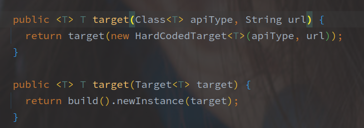

Feign
基于 spring-cloud-openfeign-core-2.2 .4.RELEASE
[TOC]
整体架构图

一、FeignClient 注解
该注解就是用来声明一个远程服务的，基于该注解代理整个接口为一个服务调用类。

| 属性名 | 属性含义 |
|---|---|
| value | 服务名称，如果采用 ribbon 会使用该服务名称从注册中心拉取地址 |
| name | 等同于 value |
| contextId | 上下文 Id，默认为服务名称 |
| qualifier | 服务别名 |
| url | 请求的绝对URL，例如微信的接口，url 就可以定义为：https://api.weixin.qq.com/ |
| decode404 | 对于404异常是否需要解码 |
| fallback | 降级策略，继承定义的接口方法实现就是服务降级的逻辑，实现类需要注册为Bean |
| fallbackFactory | 降级策略工厂，继承定义的接口方法实现就是服务降级的逻辑 |
| path | 请求地址的统一前缀 |
| primary | 等同于 @Primary 是不是主要的 Bean 对象，默认为 true |
相关组件
FeignContext
FeignContext 就是 FeignClient 的上下文，保存着每个服务对应的 ApplicationContext，并且该 ApplicationContext 以 SpringBoot 的 ApplicationContext 为父上下文。
为了每个服务调用之间的配置隔离，FeignContext 根据服务名字区分，使用如下四个属性逐次获取：
- contextId
- serviceId
- name
- value
- （根据 Bean 对象生成
相同的上下文共用同一套配置类。
Feign 中的配置以 Java Config 类实现，默认的可以参考 FeignClientsConfiguration。
相关配置中包含如下：
- Logger.Level - 日志级别
- Retryer - 重试方案
- ErrorDecoder - 异常编码，将非 200 的调用，转化为本地的异常
- Request.Options - 超时时间配置
- Collection
- 请求的拦截器 - Encoder / Decoder - 请求/响应的编解码器
- 404
等等等等。。。
Feign
Feign 的创建接口，核心方法其实只有一个：
newInstance 方法用于根据 Contract 创建一个 HTTP API 的代理对象。
Feign 中的默认实现是 ReflectiveFeign，并且 Feign 的抽象类定义中就包含了默认的 Builder（建造者模式）。

Builder 中持有了大部分的常规配置，包括 Contract 以及 Encode / Decoder，并且基本都是默认配置。
源码中好像很少直接调用 Fiegn$Builder#build 方法，而是调用另外一个 target 方法。

通过 build 创建出 Feign 之后，直接 newInstance 出代理对象。
Targeter

（其实我也不是很理解 Targeter 的作用。
2022/01/10 - Targeter 是对 Builder 的创建，Builder 用于创建 Feign 对象（类似 ReflectiveFeign / HysrtrixTargeter）。
明面上就是接收 FeignClientFactoryBean 、Feign.Builder 、FeignContext、Tareget 等参数，创建一个最终可用的代理对象，所以简单的理解是一个串联的类。
Targeter 整合现有资源创建了最终的代理对象。
targeter 的默认实现如下：
就是调用 Feign.Builder#target 方法。（甚至好几个参数没用上
另外是在 Hystrix 整合的时候，Targeter 通过判断 Feign$Builder 的类型来抽取出 Fallback 相关配置，并创建各自对象。
Target
Target 是对被代理对象的封装。

三个方法返回被代理的接口，服务名称，请求地址。
Target 的默认实现是 HardCodedTarget，默认来首
Encoder / Decoder
Feign 的编解码。
Contract
FeignClient 接口中各方法的上的注解解析。
Client
Cleint 接口用于执行请求，并返回结果。

每个 FeignClient 实例都会有一个 Client 的实现，然后由上层将请求包装为 Request 和 Options 的形式进行调用。
Feign 使用的是装饰器模式，层层包装完成不同的功能，例如 Ribbon 使用 LoadBalanceFeignClient 完成负载均衡的功能。
InvocationHandler
InvocationHandler 严格来说并不算是 SpringCloud 中的相关组件。
InvocationHandler 就是 JDK 中，对于动态代理的实现的关键，Feign 的基本原理就是通过对接口的动态代理转发接口的调用请求，所以 InvocationHandler 也是非常关键的一环。
Feign 中默认的是 ReflectiveFeign.FeignInvocationHandler，该类通过工厂模式创建，也就是 InvocationHandlerFactory。
MethodHandler

Feign 基于动态代理完成的请求转发也是间接的，InvocationHandler 完成的只是 Method 到 MethodHandler 的映射和转发调用。
内部还会对每个 FeignClient 中的每个方法都会进行包装，将每个方法包装为一个 MethodHandler。
MethodHandler 的默认实现是 SynchronousMethodHandler。
类和 MethodHandler 在 InvocationHandler 中以 dispatch（Map
请求调用的粗略过程：
使用 Feign 的调用，首先通过的是接口的 InvocationHandler，通过 Map 映射获取到对应的 MethodHandler。
每个 FeignClient 接口对应一个代理对象，接口中每个方法对应每个 MethodHandler
老子发现 Feign 很喜欢使用建造者模式或者工厂模式，而且写在一个类里面。
ReflectiveFeign 的创建方法竟然在 Feign$Builder 里面，
二、Bean 注册流程
注册流程就是解析 FeignClient 并且创建 Bean 对象的过程。
FeignClient 会对所有 @FeignClient 注解标注对接口进行代理（必须是接口，并且是从根文件开始逐个类的搜索。
具体的注册逻辑在 FeignClientsRegistrar 中，由 @Import 注解触发。
简单可以分为如下步骤:
- 注册默认的 Feign 配置
- Scanner 扫描指定目录，定位 FeignClient 接口
- 根据 FeignClient 注册对应的 Configuration
- 注册 FeignClientFactoryBean
Feign 的注册流程在创建完 FactoryBean 的时候就结束了，实际的代理对象创建在 FactoryBean 的逻辑中。
三、代理创建流程
在 Bean 的注册流程可以发现，最终注册的 Bean 对象为 FeignClientFactoryBean 类型。
FeignClientFactoryBean 直接继承了 FatcoryBean（FactoryBean 接口就是 Spring 对工厂方法模式的实现，所有的创建流程包含在 getObject() 方法中。
特别需要关注的就是 InvocationHandler 的具体实现（FeignClient 是通过 JDK 动态代理实现的代理模式）。
创建流程中先获取服务的上下文（如果没有则新建，之后获取 Feign。
Feign 就是 FeignClient 代理对象的创建者，Feign.Builder 就是 Feign 的创建者，通过 Targeter 对象调用 Builder。
Targeter 是在 Feign.Builder 和 代理对象之间一层调用，用于对 Builder 对象进行一定的修改。
例如在 HystrixTargeter 中：
会根据 FactoryBean 中 FallbackFactory 和 Fallback 的配置，转而去调用 HystrixFeign.Builder，借此干预代理对象的创建。
传入的 FallbackFactory 对象进一步传递给 InvocationHandlerFactory 对象，从而干预了代理对象的逻辑（InvocationHandlerFactory 负责创建 JDK 动态代理最重要的 InvocationHandler。
四、默认服务调用流程
通过 JDK 动态代理创建了真实的代理对象之后，具体的服务调用过程。
基本的 Http 调用以及 LoadBalance 调用（和 Ribbon 的整合），以及和 Hystrix 的整合过程。
有一个需要关注的点就是，Feign 如何映射真实接口方法和具体的功能实现。